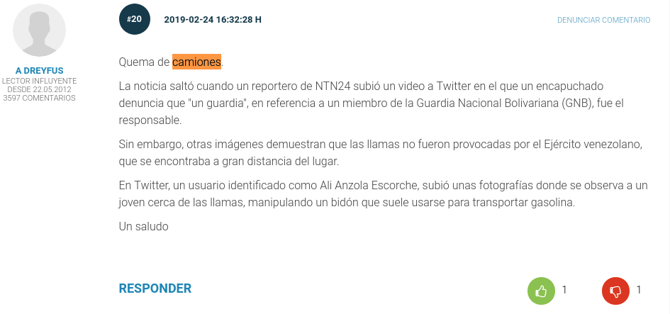

Tierra quemada
Con la llegada de los caminioes de ayuda humanitaria a la frontera de Venezuela, se produjo un choque entre las fuerzas gubernamentales y los manifestantes. Así lo recogen los diferentes medios internacionales.
- EL MUNDO (España): «La llegada de la ayuda humanitaria en Venezuela, en directo: Maduro frena la entrada con violencia». El líder opositor Juan Guaidó ha agradecido este sábado el respaldo de la comunidad internacional después de que fueran quemados dos camiones con ayuda humanitaria, y recordó que este es un «crimen de lesa humanidad».«Seguimos recibiendo el respaldo de la comunidad internacional, que ha podido ver, con sus propios ojos, cómo el régimen usurpador viola el protocolo de Ginebra, donde se dice claramente que destruir la ayuda humanitaria es un crimen de lesa humanidad", dijo Guaidó en su cuenta de Twitter.
- The Telegraph (Reino Unido): «Venezuela's Juan Guaido says 'all options open' after soldiers set fire to aid convoys in deadly border clashes». Juan Guaido, Venezuela's self-declared interim president, proposed that Washington consider "all options" to oust Nicolas Maduro on Saturday night after troops violently repelled foreign aid convoys from the border.
- Clarín (ARgentina): «Nicolás Maduro reprime el ingreso de ayuda humanitaria y rompe relaciones con Colombia». Tras ser informado de la quema de camiones con la asistencia humanitaria provista por Estados Unidos y otros países, Guaidó calificó el incendio de esa ayuda como un “crimen de lesa humanidad”.
- Televisa (México): «Guaidó repudia incendio a camiones con ayuda humanitaria - Las Noticias»
En los medios también se recogen comentarios:

<<< Volver a las preguntas

Este obra está bajo una licencia de Creative Commons Reconocimiento-CompartirIgual 4.0 Internacional.